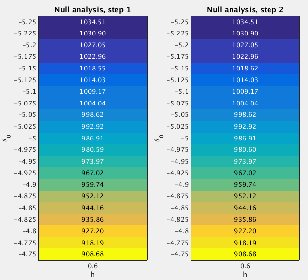

33.2 GSEA Round 2
Last updated: 2016-12-19
Code version: 9ce62d172e919ebbb9b2a9c216aad8b408a7ad44
33.2.1 Fit the null model
From the Round 1 null analysis (Section 33.1), I found that almost 100% posterior mass is concentrated on the setting (h=0.6, theta0=-5). In Round 2, I used a finer grid. Specifically, I used the grids theta0=(-5.25:0.025:-4.75)' and h=0.6 when fitting the null model. I estimated the (unnormalized) log importance weights (“pseudo-likelihoods”) for all 21 sets of (h,theta0) under null.

After normalizing the log “pseudo-likelihoods” (logw.step*) to posterior probabilities (posp.step*), we can see that almost 100% posterior mass is concentrated on the settings h=0.6 and theta0=(-5.25:0.025:-5.15)'.
theta0.index <- as.character(null.df$theta0) %in% as.character(seq(-5.25,-5.15,by=0.025))
sum(null.df$posp.step2[theta0.index]) ## [1] 133.2.2 Fit the enrichment model
To perform GSEA, I set h=0.6 and theta0=(-5.25:0.025:-5.15)', since the null analysis suggests that almost 100% posterior mass is placed on this setting. For the log-fold enrichment parameter, I use the grid theta = (0:(4.5/225):4.5)'. The following table lists the GSEA results.
Now we compare the enrichment Bayes factors from Round 1 and 2 analyses.